Godot 4.7 / GDScript
摸鱼水族馆
挂在电脑桌面底边的一整座水族馆。鱼自己游、自己攒金币、自己生小鱼。
像素素材由 Python 脚本生成
一条命令 ./run.sh 跑起来
01 / 它是什么
一扇窗，
不是一个小工具
整块缸贴在屏幕底边，四角之外能看见桌面。除了左上角那个挂耳，其余部分点击穿透。
20 秒没人碰，镜头按馆巡游。收起不留窗口，不弹通知，不出声。
 挂件形态实机：2865×239，贴在屏幕底边的一条横向观景窗
挂件形态实机：2865×239，贴在屏幕底边的一条横向观景窗
02 / 两种形态
平时一条线，想玩才铺开
挂件形态 · 空格展开
 展开形态 · 大半屏，右侧是商店
展开形态 · 大半屏，右侧是商店
位置不变，镜头的落点也不变。展开形态左右拖动浏览整条缸，点商店页签镜头会推过去。
03 / 三座馆
横向一条长缸，切成三段
珊瑚礁区
亮蓝绿，有阳光光柱。鹿角珊瑚、脑珊瑚、扇珊瑚、海葵。开局自带 8 条。
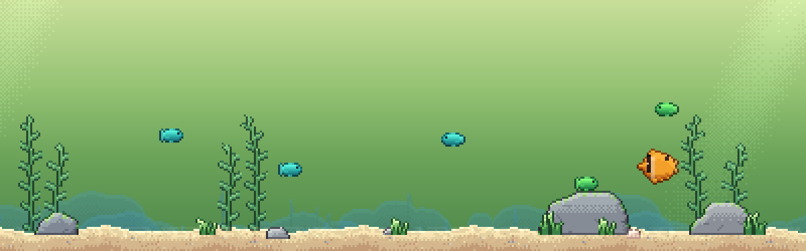
淡水草缸区
暖绿，光柱很淡。水草丛生、石头顶上长草，没有珊瑚。开局空着。
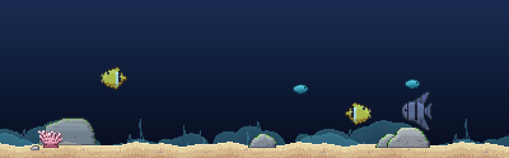
深海区
近黑。光柱和焦散全关，礁石压成冷青，摆得疏。开局空着。
三张都是程序实时跑的截图，不是美术稿。每段正好一屏宽，滑过去就到。
04 / 鱼与钱
十一条鱼，三种价
珊瑚礁区
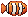 小丑鱼 | 1.0 | 10 |
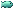 银汉鱼 | 2.0 | 20 |
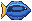 蓝倒吊 | 4.0 | 50 |
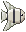 神仙鱼 | 12.0 | 200 |
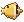 蝴蝶鱼 | 20.0 | 300 |
淡水草缸区
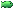 孔雀鱼 | 5.0 | 80 |
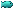 霓虹灯鱼 | 12.0 | 250 |
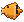 七彩神仙 | 35.0 | 800 |
淡水没有珊瑚，这几张鱼图暂时是珊瑚礁那几张改了色。
深海区
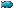 灯笼鱼 | 20.0 | 400 |
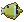 水母 | 50.0 | 1200 |
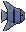 鮟鱇鱼 | 150.0 | 4000 |
深海的光全靠鱼自己亮，所以最贵的一条产币 150。
中间一列是产币速度，右边是价格。数值只集中在 godot/catalog.gd 一个文件里，调价只动它。
05 / 怎么玩
点一下水面，
鱼会自己来
挂件形态不打扰，所以整局的钱都是撒饵撒出来的。
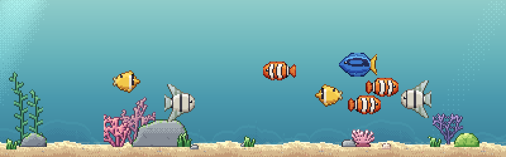
01撒饵
点水里任意一竖线，饵料先浮一下，再加速沉到终端速度，边沉边晃，落底停在沙上。
02抢食
最近的鱼加速游过去吃掉，吃饱之后接下来两分钟产币翻倍。
03产币
金币落到沙上，2.5 秒后自己进钱包。两种形态都一样，不点也会自己收。
04买鱼与扩建
右侧商店买鱼、扩容量。买的鱼从水面扑通跳进来，落在看得见的那截水中间。
06 / 素材管线
项目里没有一张手画的图
五种鱼，每种四帧摆尾自动生成。摆尾帧是脚本按轮廓和花纹推的，不是一张张画的。
python3 tools/make_art.py --preview
cd godot && godot --headless --import
07 / 技术
整缸只有一套像素网格
像素网格
整缸画在美术分辨率的 SubViewport 里再整数倍放大。Retina 下挂件形态 1 格 = 3 物理像素，展开形态 = 6。界面自己一套倍率，不跟缸走。
四个 shader
water 色带 + Bayer 抖动 + 斜光柱caustics 两层扭曲网格取最小值sway 按像素行整格平移round 按 SDF 把整块缸裁成圆角
存档
user://aquarium.json
钱包 / 每区容量
每条鱼：品种 / 展区 / 位置
改动时、每 15 秒、退出时各存一次。离线最多按 8 小时结算。
摇摆走 shader 是因为旋转会把像素拧斜，整格平移网格永远是正的。
08 / 里程碑
四个里程碑
完成三座馆
缸切成三区加三种风格加镜头巡游。只用现有素材，零新美术。
完成钱
存档、被动产币、买鱼、点水面投食、点金币收起来、扩建容量。
进行中素材
淡水区、深海区真正的鱼种和布景。这一轮的验收命令和别的里程碑不一样。
待做生态
配对下蛋孵化、离线结算框、图鉴、时间加速键、幼鱼成长。
每个里程碑的验收都只靠 ./run.sh。所以画新素材单独占一个，不塞进玩法里程碑里。
09 / 跑起来
跑起来只要一条命令
./run.sh
前提是本机装了 Godot 4.7。窗口会直接贴在桌面底边，左上角那个小挂耳点一下就展开。
Godot 4.7
Fusion Pixel Font / OFL-1.1
11 只缸实时在跑
01
封面
10
← → 翻页